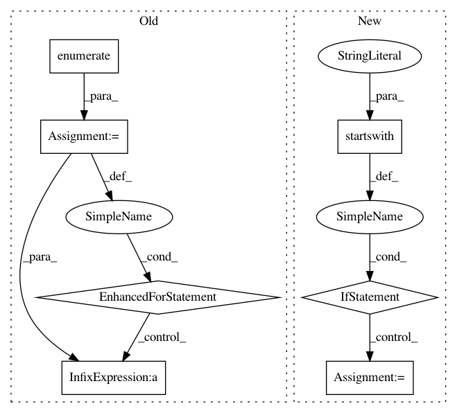

66a06524eba0b22d14204baeb2ca6d4c9db7d1d0,scripts/semantic_types.py,,convert_coq_to_nltk_type,#Any#,245
Before Change
// This list contains something like ["Entity", "->", "Prop", "->", "Prop"...]
type_sig = coq_type_list[3:]
type_ids = []
for i, type_item in enumerate(type_sig):
assert (i % 2 == 1) == (type_item == "->")
if type_item.startswith("Entity"):
type_ids.append("e")
elif type_item.startswith("Prop"):
type_ids.append("t")
elif type_item.startswith("Event"):
type_ids.append("v")
elif type_item != "->":
raise(ValueError("Invalid type name: %s in %s" % (type_item, coq_type)))
assert len(type_ids) > 0
if len(type_ids) == 1:
nltk_type_str = type_ids[0]
else:
After Change
"Entity", "e").replace(
"Prop", "t").replace(
"Event", "v")
if not nltk_type_str.startswith("(") or not nltk_type_str.endswith("("):
nltk_type_str = "(" + nltk_type_str + ")"
// Add pre-terminals (necessary for NLTK, if we convert to CNF).
nltk_type_str = re.sub(r"([evt])", r"(N \1)", nltk_type_str)
nltk_type_tree = tree_or_string(nltk_type_str)
nltk_type_tree.chomsky_normal_form(factor="right")
nltk_type_str = remove_labels_and_unaries(nltk_type_tree).replace(
In pattern: SUPERPATTERN
Frequency: 3
Non-data size: 7
Instances
Project Name: mynlp/ccg2lambda
Commit Name: 66a06524eba0b22d14204baeb2ca6d4c9db7d1d0
Time: 2017-05-12
Author: pascual@nii.ac.jp
File Name: scripts/semantic_types.py
Class Name:
Method Name: convert_coq_to_nltk_type
Project Name: ruotianluo/ImageCaptioning.pytorch
Commit Name: 0be455f86d595c12333541c09f2c5861dd76c2d4
Time: 2019-04-27
Author: rluo@ttic.edu
File Name: eval_utils.py
Class Name:
Method Name: eval_split